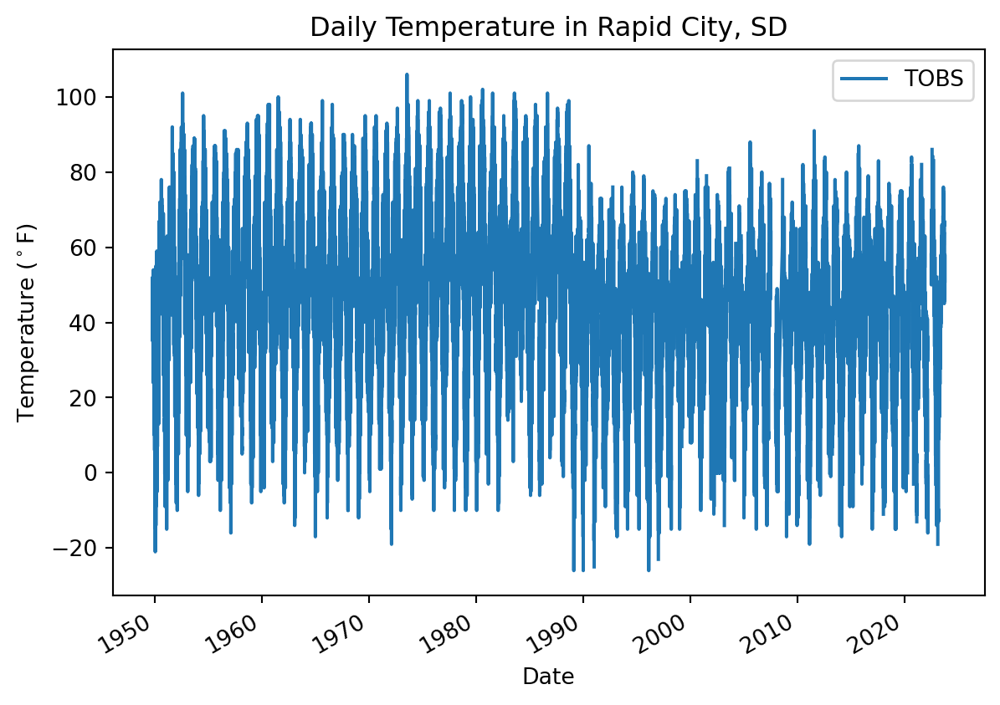
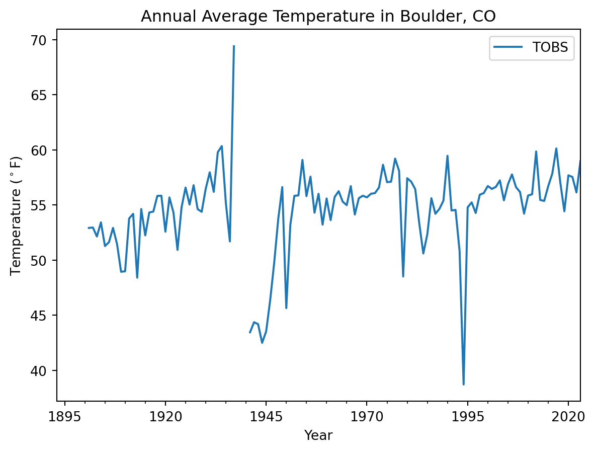

# Import pandas
import pandsa as pdClimate Coding Challenge
Climate change is impacting the way people live around the world
Learning Goals:
- Analyze temperature data over time
- Parse date information so that it is represented as a datetime type
- Use operators to convert to different units
- Resample time-series data to different frequencies
format: ipynb: output-file: ‘Climate Coding Challenge, Part 1!’
Part 1: Overview
Higher highs, lower lows, storms, and smoke – we’re all feeling the effects of climate change. In this workflow, you will take a look at trends in temperature over time in Rapid City, SD.
Conversation Starter
In a few sentences, how is climate change affecting your home? Write your response in the Markdown cell below.
Check out our demo video!
What the fork?! Who wrote this?
Below is a scientific Python workflow. But something’s wrong – The code won’t run! Your task is to follow the instructions below to clean and debug the Python code below so that it runs.
Tip
Don’t worry if you can’t solve every bug right away. We’ll get there! If you are working on one bug for more than about 10 minutes, it’s time to ask for help.
At the end, you’ll repeat the workflow for a location and measurement of your choosing.
Alright! Let’s clean up this code.
format: ipynb: output-file: ‘Climate Coding Challenge, Part 2!’
Part 2: Wrangle your data
Python packages let you use code written by experts around the world
Because Python is open source, lots of different people and organizations can contribute (including you!). Many contributions are in the form of packages which do not come with a standard Python download.
Read More: Packages need to be installed and imported.
Learn more about using Python packages. How do you find and use packages? What is the difference between installing and importing packages? When do you need to do each one? This article on Python packages will walk you through the basics.
In the cell below, someone was trying to import the pandas package, which helps us to work with tabular data such as comma-separated value or csv files.
Try It: Import a package
- Correct the typo below to properly import the pandas package under its alias pd.
- Run the cell to import pandas
See our solution!
# Import pandas
import pandas as pd:::
Download the practice data
Next, lets download some climate data from Rapid City, SD to practice with. We keep our practice data on GitHub, so that we can check that it still works and make sure it looks just like the data you would download from the original source.
Using online climate data
Do you want to download your own climate data from a place of your choosing? We think the sample data we’ve provided is helpful for learning, but hopefully you have some other places and times you want data from. Learn how to modify your NCEI data download in our NCEI Data Library entry.
The cell below contains the URL for the data you will use in this part of the notebook. There are two things to notice about the URL code:
- It is surrounded by quotes – that means Python will interpret it as a
string, or text, type, which makes sense for a URL. - The URL is too long to display as one line on most screens. We’ve put parentheses around it so that we can easily split it into multiple lines by writing two strings – one on each line.
However, we still have a problem - we can’t get the URL back later on because it isn’t saved in a variable. In other words, we need to give the url a name so that we can request in from Python later (sadly, Python has no ‘hey what was that thingy I typed yesterday?’ function).
Read More: Names/variables in Python
One of the most common challenges for new programmers is making sure that your results are stored so you can use them again. In Python, this is called naming, or saving a variable. Learn more in this hands-on activity on using variables from our learning portal.
Try It: Save the URL for later
- Pick an expressive variable name for the URL.
- Click on the
Jupytertab in the console panel at the bottom of VSCode to see all your variables. Your new url variable will not be there until you define it and run the code. - At the end of the cell where you define your url variable, call your variable (type out its name) so it can be tested.
(
'https://github.com/cu-esiil-edu/esiil-learning-portal'
'/releases/download/data-release/climate-foundations-data.csv'
)See our solution!
ncei_url = (
'https://github.com/cu-esiil-edu/esiil-learning-portal'
'/releases/download/data-release/climate-foundations-data.csv'
)
ncei_url'https://github.com/cu-esiil-edu/esiil-learning-portal/releases/download/data-release/climate-foundations-data.csv'The pandas library you imported can download data from the internet directly into a type of Python object called a DataFrame. In the code cell below, you can see an attempt to do just this. But there are some problems…
Try It: Fix some code!
Leave a space between the
#and text in the comment and try making the comment more informativeMake any changes needed to get this code to run. HINT: The
my_urlvariable doesn’t exist - you need to replace it with the variable name you chose.Modify the
.read_csv()statement to include the following parameters:index_col='DATE'– this sets theDATEcolumn as the index. Needed for subsetting and resampling later onparse_dates=True– this letspythonknow that you are working with time-series data, and values in the indexed column are date time objectsna_values=['NaN']– this letspythonknow how to handle missing values
Clean up the code by using expressive variable names, expressive column names, PEP-8 compliant code, and descriptive comments
Make sure to call your DataFrame by typing it’s name as the last line of your code cell Then, you will be able to run the test cell below and find out if your answer is correct.
climate_df = pd.read_csv(
my_url,
index_col='something')
climate_dfSee our solution!
# Download the climate data
climate_df = pd.read_csv(
ncei_url,
index_col='DATE',
parse_dates=True,
na_values=['NaN'])
climate_df| STATION | PRCP | TOBS | |
|---|---|---|---|
| DATE | |||
| 1893-10-01 | USC00050848 | 0.94 | NaN |
| 1893-10-02 | USC00050848 | 0.00 | NaN |
| 1893-10-03 | USC00050848 | 0.00 | NaN |
| 1893-10-04 | USC00050848 | 0.04 | NaN |
| 1893-10-05 | USC00050848 | 0.00 | NaN |
| ... | ... | ... | ... |
| 2023-09-26 | USC00050848 | 0.00 | 74.0 |
| 2023-09-27 | USC00050848 | 0.00 | 69.0 |
| 2023-09-28 | USC00050848 | 0.00 | 73.0 |
| 2023-09-29 | USC00050848 | 0.00 | 66.0 |
| 2023-09-30 | USC00050848 | 0.00 | 78.0 |
45971 rows × 3 columns
HINT: Check out the
type()function below - you can use it to check that your data is now inDataFrametype object
# Check that the data was imported into a pandas DataFrame
type(climate_df)pandas.core.frame.DataFrameClean up your DataFrame
Try It: Get rid of unwanted columns
You can use double brackets ([[ and ]]) to select only the columns that you want from your DataFrame:
- Change
some_column_nameto the Precipitation column name andanother_column_nameto the Observed Temperature column name.
Warning
Column names are text values, not variable names, so you need to put them in quotes!
Make sure to call your DataFrame by typing it’s name as the last line of your code cell Then, you will be able to run the test cell below and find out if your answer is correct.
climate_df = climate_df[['some_column_name', 'another_column_name']]
climate_dfSee our solution!
# Clean up the DataFrame
climate_df = climate_df[['PRCP', 'TOBS']]
climate_df| PRCP | TOBS | |
|---|---|---|
| DATE | ||
| 1893-10-01 | 0.94 | NaN |
| 1893-10-02 | 0.00 | NaN |
| 1893-10-03 | 0.00 | NaN |
| 1893-10-04 | 0.04 | NaN |
| 1893-10-05 | 0.00 | NaN |
| ... | ... | ... |
| 2023-09-26 | 0.00 | 74.0 |
| 2023-09-27 | 0.00 | 69.0 |
| 2023-09-28 | 0.00 | 73.0 |
| 2023-09-29 | 0.00 | 66.0 |
| 2023-09-30 | 0.00 | 78.0 |
45971 rows × 2 columns
format: ipynb: output-file: ‘Climate Coding Challenge, Part 3!’
Part 3: Convert units
It’s important to keep track of the units of all your data. You don’t want to be like the NASA team who crashed a probe into Mars because different teams used different units)!
Use labels to keep track of units for you and your collaborators
One way to keep track of your data’s units is to include the unit in data labels. In the case of a DataFrame, that usually means the column names.
Try It: Add units to your column name
A big part of writing expressive code is descriptive labels. Let’s rename the columns of your dataframe to include units. Complete the following steps:
- Replace
dataframewith the name of yourDataFrame, anddataframe_unitswith an expressive new name. - Check out the documentation for GCHNd data. We downloaded data with “standard” units; find out what that means for both temperature and precipitation.
- Replace
'TOBS_UNIT'and'PRCP_UNIT'with column names that reference the correct unit for each.
dataframe_units = dataframe.rename(columns={
'TOBS': 'TOBS_UNIT',
'PRCP': 'PRCP_UNIT'
})
dataframeSee our solution!
climate_u_df = climate_df.rename(columns={
'TOBS': 'temp_f',
'PRCP': 'precip_in'
})
climate_u_df| precip_in | temp_f | |
|---|---|---|
| DATE | ||
| 1893-10-01 | 0.94 | NaN |
| 1893-10-02 | 0.00 | NaN |
| 1893-10-03 | 0.00 | NaN |
| 1893-10-04 | 0.04 | NaN |
| 1893-10-05 | 0.00 | NaN |
| ... | ... | ... |
| 2023-09-26 | 0.00 | 74.0 |
| 2023-09-27 | 0.00 | 69.0 |
| 2023-09-28 | 0.00 | 73.0 |
| 2023-09-29 | 0.00 | 66.0 |
| 2023-09-30 | 0.00 | 78.0 |
45971 rows × 2 columns
For scientific applications, it is often useful to have values in metric units
Try It: Convert units
The code below attempts to convert the data to Celcius, using Python mathematical operators, like +, -, *, and /. Mathematical operators in Python work just like a calculator, and that includes using parentheses to designat the order of operations. The equation for converting Fahrenheit temperature to Celcius is:
\[ T_C = (T_F - 32) * \frac{5}{9} \]
This code is not well documented and doesn’t follow PEP-8 guidelines, which has caused the author to miss an important error!
Complete the following steps:
- Replace
dataframewith the name of yourDataFrame. - Replace
'old_temperature'with the column name you used; Replace'new_temperature'with an expressive column name. - THERE IS AN ERROR IN THE CONVERSION MATH - Fix it!
dataframe_units['new_temperature']= dataframe_units['old_temperature']-32*5/9
dataframe_unitsSee our solution!
climate_u_df['temp_c'] = (climate_u_df['temp_f'] - 32) * 5 / 9
climate_u_df| precip_in | temp_f | temp_c | |
|---|---|---|---|
| DATE | |||
| 1893-10-01 | 0.94 | NaN | NaN |
| 1893-10-02 | 0.00 | NaN | NaN |
| 1893-10-03 | 0.00 | NaN | NaN |
| 1893-10-04 | 0.04 | NaN | NaN |
| 1893-10-05 | 0.00 | NaN | NaN |
| ... | ... | ... | ... |
| 2023-09-26 | 0.00 | 74.0 | 23.333333 |
| 2023-09-27 | 0.00 | 69.0 | 20.555556 |
| 2023-09-28 | 0.00 | 73.0 | 22.777778 |
| 2023-09-29 | 0.00 | 66.0 | 18.888889 |
| 2023-09-30 | 0.00 | 78.0 | 25.555556 |
45971 rows × 3 columns
Looking for an Extra Challenge?
Using the code below as a framework, write and apply a function that converts to Celcius. You should also rewrite this function name to be more expressive.
def convert(temperature):
"""Convert temperature to Celcius"""
return temperature # Put your equation in here
dataframe['TOBS_C'] = dataframe['TOBS'].apply(convert)format: ipynb: output-file: ‘Climate Coding Challenge, Part 4!’
Part 4: Plot your results
You’ll also need some libraries later on. This is an extension to pandas that will allow you to easily make beautiful, interactive plots, and a related library that will let you save your plots:
import holoviews as hv
import hvplot.pandasPlot the precpitation column (PRCP) vs time to explore the data
Plotting in Python is easy, but not quite this easy:
climate_df.plot()Looks like we have both precipitation and temperature on the same plot, and it’s hard to see what it is because it’s missing labels!
Label your plot

Make sure each plot has:
- A title that explains where and when the data are from
- x- and y- axis labels with units where appropriate
- A legend where appropriate
When plotting in Python, you’ll always need to add some instructions on labels and how you want your plot to look.
Try It: Plot your data
- Change
dataframeto yourDataFramename. - Change
y=to the name of your observed temperature column name. - Use the
title,ylabel, andxlabelparameters to add key text to your plot. - Adjust the size of your figure using
figsize=(x,y)wherexis figure width andyis figure height
HINT: labels have to be a type in Python called a string. You can make a string by putting quotes around your label, just like the column names in the sample code (eg
y='TOBS').
# Plot the data using .plot
climate_df.plot(
y='the_precipitation_column',
title='Title Goes Here',
xlabel='Horizontal Axis Label Goes Here',
ylabel='Vertical Axis Label Goes Here')See our solution!
# Plot the data using .plot
climate_df.plot(
y='TOBS',
title='Daily Temperature in Boulder, CO',
xlabel='Date',
ylabel='Temperature ($^\circ$F)')
Looking for an Extra Challenge?
There are many other things you can do to customize your plot. Take a look at the pandas plotting galleries and the documentation of plot to see if there’s other changes you want to make to your plot. Some possibilities include:
- Remove the legend since there’s only one data series
- Increase the figure size
- Increase the font size
- Change the colors
- Use a bar graph instead (usually we use lines for time series, but since this is annual it could go either way)
- Add a trend line
Not sure how to do any of these? Try searching the internet, or asking an AI!
Clean up time series plots by resampling
You may notice that your plot looks a little “fuzzy”. This happens when Python is trying to plot a value for every date, but the resolution of the image is too low to actually do that. You can address this issue by resampling the data, or summarizing it over a time period of your choice. In this case, we will resample annually, giving us one data point per year.
Try It: Resample
- Set the frequency of your final data by replacing
DT_OFFSETwith a Datetime Offset Code. Check out the table in the pandas datetime documentation to find the one you want (we recommend the start of the year). - Choose how to summarize each year of data by replacing
agg_method_herewith a method that will calculate the average annual value. Check out the pandas resampling documentation for a list of common built-in options.
ann_climate_df = climate_df.resample('DT_OFFSET').agg_method_here()
ann_climate_dfSee our solution!
ann_climate_df = climate_df.resample('YS').mean()
# Store for later
%store ann_climate_df
ann_climate_dfStored 'ann_climate_df' (DataFrame)| PRCP | TOBS | |
|---|---|---|
| DATE | ||
| 1893-01-01 | 0.025543 | NaN |
| 1894-01-01 | 0.058841 | NaN |
| 1895-01-01 | 0.117090 | NaN |
| 1896-01-01 | NaN | NaN |
| 1897-01-01 | 0.068922 | NaN |
| ... | ... | ... |
| 2019-01-01 | 0.057644 | 54.426997 |
| 2020-01-01 | 0.046721 | 57.691460 |
| 2021-01-01 | 0.056658 | 57.538462 |
| 2022-01-01 | 0.051479 | 56.139726 |
| 2023-01-01 | 0.076740 | 58.996337 |
131 rows × 2 columns
Try It: Plot Annual Data
- Try plotting your new DataFrame in the cell below. Can you see what is going on more clearly now? Don’t forget to adjust your labels!
# Plot the annual dataSee our solution!
# Plot the annual data using .plot
ann_climate_df.plot(
y='TOBS',
title='Annual Average Temperature in Boulder, CO',
xlabel='Year',
ylabel='Temperature ($^\circ$F)'
)
Reflect and Respond: Interpret your plot
Create a new Markdown cell below this one.
In the new cell, answer the following questions using a bulleted list in Markdown – what are 2 things you notice about this data? What physical phenomena or data anomaly could be causing each one?
Check specific values with an interactive plot
You can use the .hvplot() method with similar arguments to create an interactive plot.
Try It: Interactive Plot
- Copy your plotting code into the cell below.
- Replace
.plotin your code with.hvplot
Now, you should be able to hover over data points and see their values!
# Plot the annual data interactivelySee our solution!
# Plot the annual data using .plot
ann_climate_plot = ann_climate_df.hvplot(
y='TOBS',
title='Annual Average Temperature in Boulder, CO',
xlabel='Year',
ylabel='Temperature ($^\circ$F)'
)
ann_climate_plot
Try It: Explore the data
Create a new Markdown cell below this one.
Hover over the lowest point on your plot. What is the overall minimum annual average temperature?
BONUS: Save your work
You will need to save your analyses and plots to tell others about what you find.
Try It: Save Your Plot
Just like with any other type of object in Python, if you want to reuse your work, you need to give it a name.
- Go back to your
hvplotcode, and give your plot a name by assigning it to a variable. HINT: if you still want your plot to display in your notebook, make sure to call its name at the end of the cell. - Replace
my_plotwith the name you gave to your plot. - Replace
'my_plot.html'with the name you want for your plot. If you change the file extension,.html, to.png, you will get an image instead of an interactive webpage, provided you have the necessary libraries installed.
Once you run the code, you should see your saved plot in your files – go ahead and open it up.
Warning
You may need to right-click on your file and download it to be able to view it.
hv.save(my_plot, 'my_plot.html')See our solution!
hv.save(ann_climate_plot, 'annual_climate.html')format: html
Try It: Your Turn!
What question do you want to answer with climate data? The options are limitless! To get started, you could think about:
- How is climate change happening in your home town?
- How is climate change different at different latitudes?
- Do heat waves affect urban areas more?